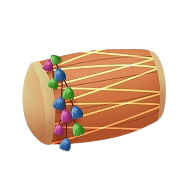

India's history is marked by the rise and fall of several powerful dynasties, each contributing to its rich cultural and religious heritage.
Read it!!
(Hover to reveal)
1. Indus Valley Civilization (c. 3300 BCE - 1300 BCE):
- One of the earliest urban civilizations, known for advanced cities like Harappa and Mohenjo-Daro.
2. Maurya Dynasty (c. 322 BCE - 185 BCE):
- Chandragupta Maurya: Unified much of India for the first time.
- Ashoka: Expanded the empire and promoted Buddhism, leaving behind numerous stupas and pillars.
3. Gupta Dynasty (c. 320 CE - 550 CE):
- Often referred to as the "Golden Age" of India, marked by advancements in art, literature,
science, and mathematics
4. Delhi Sultanate (c. 1206 CE - 1526 CE):
- Mamluks, Khiljis, Tughlaqs, Sayyids, and Lodis: Established Islamic rule in northern India and
influenced architecture and culture.
5. Mughal Dynasty (c. 1526 CE - 1857 CE):
- Babur, Akbar, Shah Jahan, and Aurangzeb: Created a vast empire known for cultural fusion and
architectural marvels like the Taj Mahal.
6. British Raj (c. 1858 CE - 1947 CE):
- Following the decline of the Mughals, the British established colonial rule over India, leading to
economic exploitation and significant cultural changes. This period ended with India's independence
in 1947.